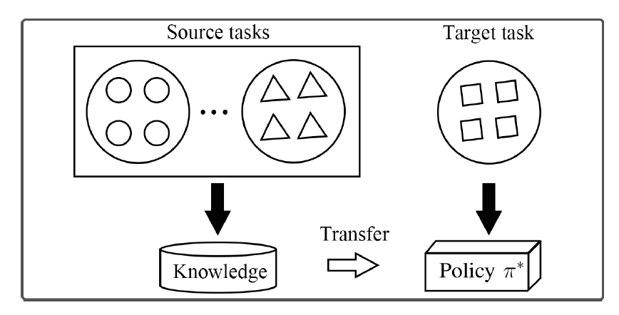
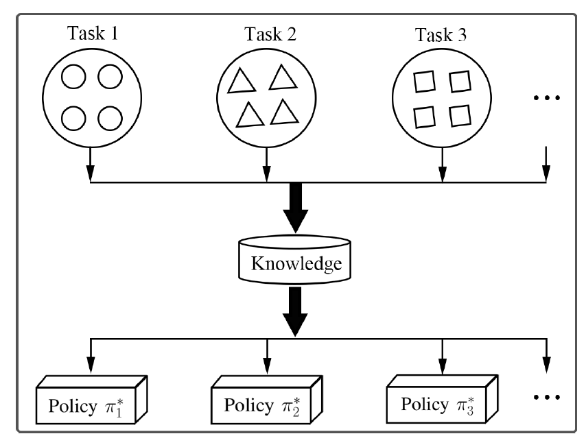
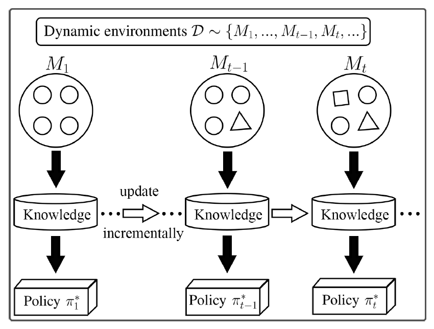
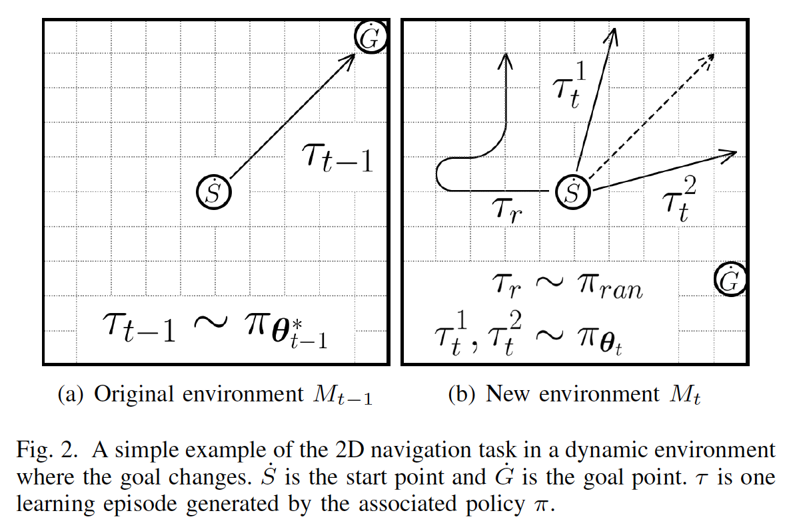
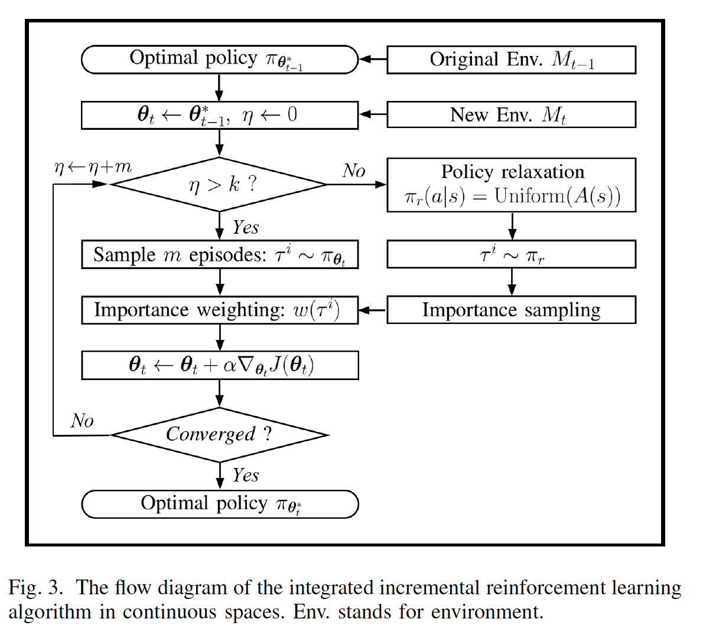
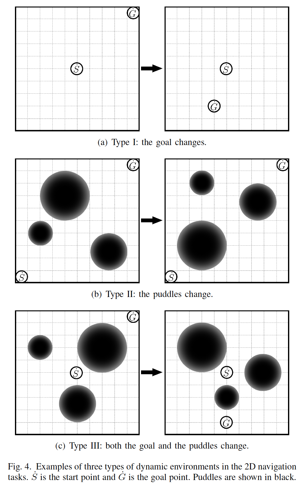
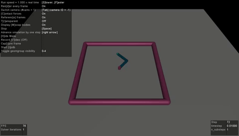
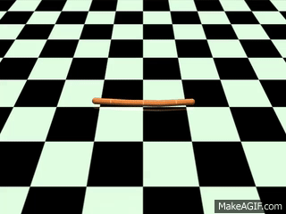

|
Dynamic environments
Traditional RL algorithms are performed in stationary environments. However, in many real-world applications, the environments are often dynamic, where the agent's states, available actions, state transition functions, and corresponding rewards may change over time.
|
|
Transfer learning vs. Multi-task learning vs. Incremental learning
|
|  |
Transfer RL
addresses the cross-task generalization problem, which reuses the knowledge from a set of related source domains to help the learning task in the target domain.
Different types of knowledge can be transferred, such as sample instances, policies, and value functions. With the advance in DRL, the researchers focus more on how to transfer the knowledge with the use of DNNs.
|
|  |
Multi-task RL
aims to solve a fixed set of tasks simultaneously based on the assumption that the tasks share some similarities in components such as the reward structure, the transition dynamics, or the value function.
|
|  |
Incremental RL
incrementally adjusts the previously learned policy to a new one that fits in the new environment whenever the environment changes, which offers an appealing alternative for fast adaptation to dynamic environments.
Only the learned function approximation is needed for the new environment, circumventing the necessity for repeatedly accessing or processing a potentially large set of source tasks.
|
|
Incremental reinforcement learning in continuous spaces
When the environment changes, one can directly initialize the parameters of a function approximation from the previous optima that have learned some of feature representations (e.g., nodes in a neural network) of the state-action space in the original environment.
|
|
Step 1: Policy relaxation
When the environment changes, the agent tends to visit a small part of the whole state-action space when executing the previously learned policy, thus probably leading to a local optimum due to insufficient exploration.
Hence, we propose a policy relaxation mechanism to encourage proper exploration for better adaptation in the long term.
In the $k$ burn-in learning episodes, the agent is forced to execute a relaxed policy where actions are randomly selected from the available set. Let $\pi_{\theta}$ denote the learned policy with parameters $\theta$. Regarding the number of learning episodes $\eta$, the agent's behavior policy $\pi_r$ is relaxed as:
$\pi_r(a|s)=uniform(A(s))~~if~~\eta\le k~~else~~\pi_{\theta}(a|s)$
However, in the k burn-in episodes, we would encounter the special difficulty due to a mismatch of distributions. We would like samples drawn from the distribution of the estimated policy $\pi_{\theta}$ but all we have are samples drawn from the distribution of another behavior policy $\pi_r$.
We adopt the classical Monte-Carlo technique, importance sampling, to handle this kind of mismatch as:
$E_{\tau\sim\pi_{\theta}(\tau)}[r(\tau)]=\int_{\tau}\pi_{\theta}(\tau)r(\tau)d\tau=\int_{\tau}\frac{\pi_{\theta}(\tau)}{\pi_r(\tau)}r(\tau)\pi_r(\tau)=E_{\tau\sim\pi_r(\tau)}\left[\frac{\pi_{\theta}(\tau)}{\pi_r(\tau)}r(\tau)\right]$
|
|
Step 2: Importance Weighting
We denote three kinds of learning episodes as:
| $\tau_{t-1}$: |
generated by the learned optimal policy in the original environment |
| $\tau_{r}$: |
generated by a randomly-initialized policy |
| $\tau_t^1,\tau_t^2$: |
generated by the current policy that is initialized from the original environment |
|
|

|
|
Empirical benifit: $r(\tau_t^1), r(\tau_t^2) > r(\tau_r)$
Episodes generated by the current policy tend to receive higher returns than those generated by a random policy. Initializing parameters from the original environment empirically benefits the learning process when starting to interact with the new environment.
Motivation
We need to encourage the policies to move towards promising regions of parameter space that better fits in the new environment, which may be far away from the previous optimum.
Insight
Due to the environment change, the two example episodes, $\tau_t^1$ and $\tau_t^2$, cannot obtain satisfactory learning performance yet in the new environment. Nevertheless, compared to $\tau_t^1$, the episode $\tau_t^2$ is closer to the new optimal path, and receives a higher return in the new environment. Empirically, it indicates that episodes receiving higher returns are more in line with the new environment, i.e., containing more new information.
Re-weighting
During parameter updating, we assign higher importance weights to episodes that contain more new information, thus encouraging the previous optimum of parameters to be faster adjusted to a new one that fits in the new environment. It may be helpful for the algorithm to escape from those "deceptive" regions adjacent to the parameter space of the previous optimum.
$w(\tau^i)=\frac{1}{\rho}(r(\tau^i)+u)$
$\nabla_{\theta}J(\theta)=\sum_iw(\tau^i)\nabla_{\theta}\log\pi_{\theta}(\tau^i)r(\tau^i)$
|
|
The integrated algorithm
|
|
 |
|
Experiments
2D navigation tasks, and MuJoCo locomotion tasks.
|
|
2D navigation
A point agent must move to a goal position in 2D. The observation is the current 2D position, and actions correspond to 2D velocity commands clipped to be in the range [-0.1,0.1]. Episodes terminate when the agent is within 0.01 of the goal or at the horizon of H=100.
|
|
 |
|
MuJoCo locomotiton
Reacher: This domain consists of moving a two-joint torque-controlled simulated robotic arm to a specific target location.
|
|
 |
| Type I: |
Varying the target location within the reachable circle randomly.
The environment changes in the reward functions in this case.
|
| Type II: |
Varying the physical variables of "link0" and "joint0" at random.
The state transition functions change.
|
| Type III: |
Varying both the target location and the physical variables randomly.
The environment changes in both the reward and state transition functions. |
|
|
Swimmer/Hopper/HalfCheetah: It requires a 2D Swimmer/one-legged Hopper/planar Cheetah robot to swim/hop/run forward at a particular velocity. The dynamic environment is created by changing the goal velocity between 0 and 2 at random.
|
|

|

|

|
|